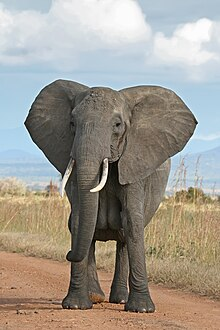
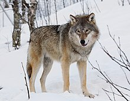

Elephants are the largest living land animals. Three living species are currently
recognised: the African bush elephant (Loxodonta africana), the African forest
elephant (L. cyclotis), and the Asian elephant (Elephas maximus). They are the
only surviving members of the family Elephantidae and the order Proboscidea.
The giraffe is a large African hoofed mammal belonging to the genus Giraffa.
It is the tallest living terrestrial animal and the largest ruminant on Earth.
Traditionally, giraffes have been thought of as one species, Giraffa camelopardalis, with nine subspecies.
Most recently, researchers proposed dividing them into four extant species
due to new research into their mitochondrial and nuclear DNA

The lion (Panthera leo) is a large cat of the genus Panthera, native to Africa
and India. It has a muscular, broad-chested body; a short, rounded head; round
ears; and a dark, hairy tuft at the tip of its tail.

Foxes are small-to-medium-sized omnivorous mammals belonging to several
genera of the family Canidae. They have a flattened skull; upright, triangular
ears; a pointed, slightly upturned snout; and a long, bushy tail ("brush").
The wolf, also known as the gray wolf or grey wolf,
is a canine native to Eurasia and North America. More than thirty subspecies of Canis lupus
have been recognized, including the dog and dingo, though gray wolves,
as popularly understood, only comprise naturally-occurring wild subspecies.
